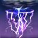
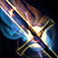
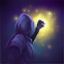
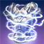
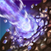
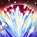
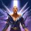
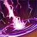

Мана сорк билд
Броня
Броню из сета "Perfect Mantle of Siroria" можно получить в ветеранском режиме триала Клаудрест.
Броню из сета "Mother's Sorrow" можно получить формя Дешаан.
Сет "Zaan" является монстр сетом, голову можно получить из последнего босса в ветеранском пике Призывательницы Чешуи, а наплечники выпадают из сундука с наградой Ургарлаг Бич Вождей в анклаве Неустрашимых.
Сет "Ilambris" - второй монстр сет, который вы можете использовать. Голова добывается в ветеранской Крипте сердец 1, а наплечники выпадают из сундука с наградой Глириона Краснобородого в анклаве Неустрашимых.
Посох "The Maelstrom's Inferno Staff" можно получить в Ветеранской версии Маэлстром Арены.
| Часть брони | Сет | Тип брони | Трейт | Зачарование |
|---|---|---|---|---|
| Грудь | Perfect Mantle of Siroria | Лёгкий | Divine | Магия |
| Пояс | Mother's Sorrow | Лёгкий | Divine | Магия |
| Обувь | Mother's Sorrow | Лёгкий | Divine | Магия |
| Поножи | Perfect Mantle of Siroria | Лёгкий | Divine | Магия |
| Руки | Mother's Sorrow | Лёгкий | Divine | Магия |
| Голова | Zaan/ Ilambris | Лёгкий | Divine | Магия |
| Плечи | Zaan/ Ilambris | Лёгкий | Divine | Магия |
| Ожерелье | Perfect Mantle of Siroria | Ювелирка | Bloodthirsty/ Arcane | Магический урон |
| Кольцо | Perfect Mantle of Siroria | Ювелирка | Bloodthirsty | Магический урон |
| Кольцо | Perfect Mantle of Siroria | Ювелирка | Bloodthirsty | Магический урон |
| Оружие 1 | Mother's Sorrow | Огненный | Precise | Огненный урон |
| Оружие 2 | The Maelstrom's Inferno Staff | Огненный | Infused | Поглощение |
Способности
- 
- 
- 
- 
- 
- 
- 

- 
Ваша ротаци должна выглядеть так:
Liquid Lightning > Weapon Swap >
LA > Blockade of Fire > LA > Haunting Curse > Weapon Swap >
LA > 5x Elemental Weapon (With LA) > Liquid Lightning > Weapon Swap >
Повторять